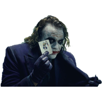

Curriculum Vitae de Bruce Wayne
Datos personales
- Nombre completo: Bruce Wayne
- Fecha de nacimiento: 1/5/39
- Lugar de nacimiento: Gotham City

Formación académica
- 1956-1961: Universidad del Espantapajaros
- 1952-1956: Instituto de Dos Caras
- 1944-1952: Escuela Primaria del Joker
Experiencia Laboral
- 1975-1985: En el paro
- 1965-1975: Cazavillanos y demás chusma
- 1962-1965: Apendiz de superhéroe